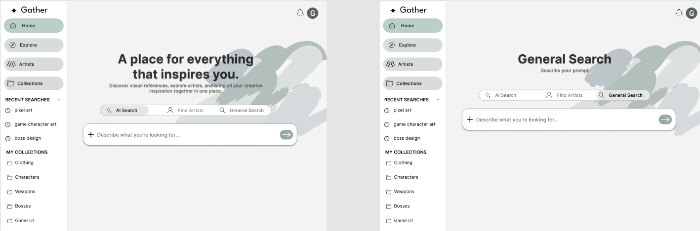
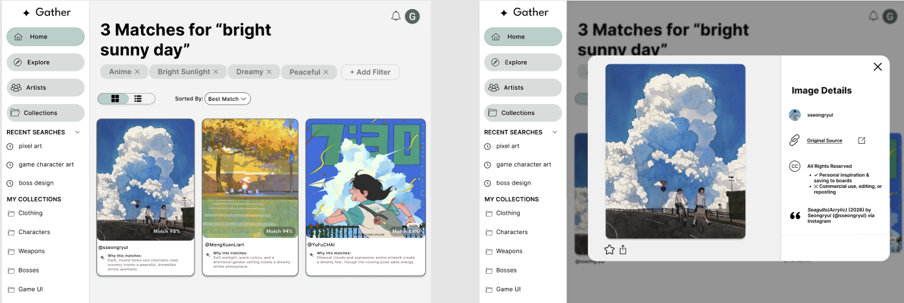
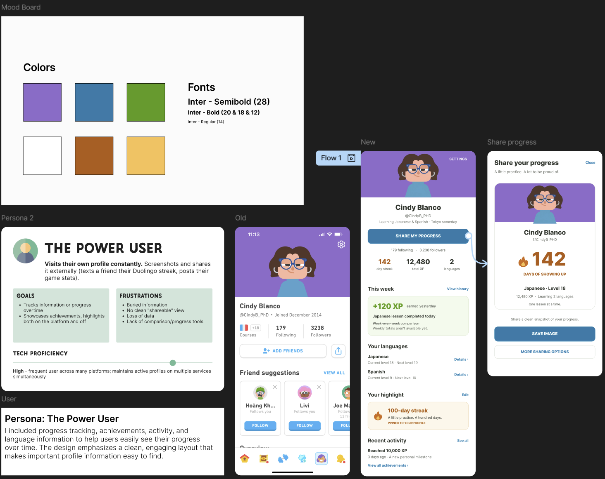
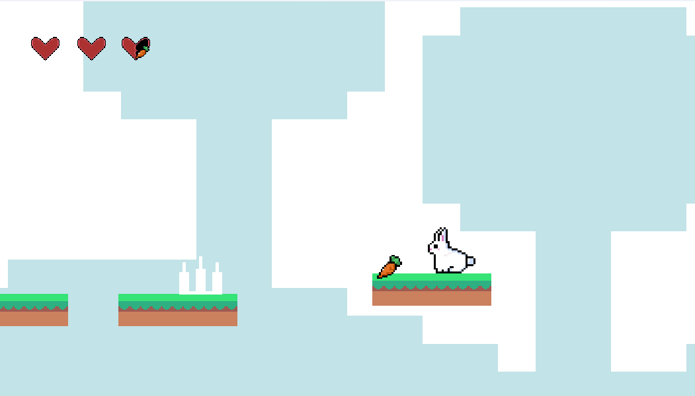

★ Featured
Computational Media · Georgia Tech
Hey, I'm Tanisi!
I like working where design meets technology.
I'm studying Computational Media at Georgia Tech. I like figuring out how things can work better and turning those ideas into something real.

● Open to internships
01 / Featured Projects
Work I'm proud of right now.
Three projects that show how I think across research, design, and build. Open any one to read the full story.
02 / Product Thinking
From User Insight to Product Decision
A short walkthrough of how I move from research to a product call. Follow the four stages, or jump to the one you care about.
Before designing anything, I pin down the real problem and who it's for. Choose a project, then walk its progression.

ER FastTrack Emergency-room triage support · solo build
Emergency departments lose time to repeated information-gathering, and patients misjudge how urgent they are, roughly 65% overestimate and about 8% underestimate (the more dangerous case). The tool collects structured info before a clinician sees the patient and surfaces details that may need a faster look.
Patients report → software organizes → clinicians decide. An adaptive intake asks one question per screen; a non-diagnostic flagging engine surfaces what may need review and explains why in plain language; a nurse dashboard presents it clearly.
The defining boundary: it never diagnoses or ranks patients on its own. Every priority and clinical call stays with qualified staff, the constraint that shaped every later decision.


Gather Visual reference discovery · with Julia Hou
Finding the right reference image is mostly keyword guesswork: people scroll past near-misses and jump between Pinterest, Google, and other sites. Gather explores how AI-driven personalization and smart filtering could make that more intuitive.
We started from a user profile built from preliminary research. Maya is a creative university student who makes recreational art and runs a small business, so she needs inspiration and references she can trust and credit properly. Her frustrations shaped Gather directly: tailored results, clear sourcing, and an easier way to keep track of references.
- Finding the right reference. Google works when users already know what they want; Pinterest for open inspiration, but recommendations often miss the mark.
- Browsing vs. searching with a goal. People explore without a starting point, then switch to targeted search once they have an idea.
- Trust, attribution & copyright. Tracking down proper attribution is time-consuming; users worry about stolen or AI-generated work.
- Managing & revisiting references. References are spread across platforms, making them hard to save and come back to.
Research-driven UI/UX. Pick a screen, then choose a topic to highlight the relevant area and read the decision behind it.



Shows: turning research into interface decisions. Gather designs → · Bits of Good redesigns →
Design only matters once it's real. Select a project to see the contribution and a large view.



Looking back per project: what I'd evaluate, change, or investigate next. Forward-looking ideas are labeled as hypothetical, not completed work.
Gather
What I did: grounded the design in a persona and four research clusters before building screens, with Julia Hou.
Hypothetical next Run usability testing on the hi-fi flows to check whether the attribution and filtering actually feel clear to users.
ER FastTrack
What I did: made a deliberate tradeoff, keeping the software non-diagnostic for safety and clinician trust, and built accessibility in (large targets, plain language, ARIA).
Hypothetical next Test the accessibility and flagging with real emergency-department staff to validate it under stress.
Unraveling
What I did: revised my UI based on feedback from VGDev's 100+ person team to fit a shared visual direction.
Hypothetical next Pressure-test the paranoia overlay's legibility across more in-game scenes before locking it in.
The Flower
What I did: built the core systems solo in GameMaker, and the core movement already feels good.
Hypothetical next Finish the content and play-test with others to tune difficulty and level pacing.
The throughline: start from a real need, make a deliberate tradeoff, and stay open to revising, the product thinking I want to keep sharpening.
03 / Skills
What I work with.
- Interaction Design
- UI/UX Design
- Prototyping
- Wireframing
- Auto Layout
- User Research
- Accessibility
- Python
- Java
- GameMaker (GML)
- HTML / CSS / JS (AI-assisted)
- Figma
- Git & GitHub
- Kiro
- Claude
04 / Experience & Involvement
Where I've been building.
-
Bits of Good, Figma Design Track
Sept - Nov 2026Georgia Tech
- Learning interface design, prototyping, and visual hierarchy through weekly Figma exercises.
- Redesigned real product screens, including Duolingo profile pages and an Etsy checkout flow.
- Started Gather, a visual reference discovery concept, with my partner Julia Hou through this program.
-
VGDev, "Unraveling"
Sept 2026 - PresentGeorgia Tech
- Designing UI elements for a collaborative game made by GT's video game development club.
- Built a paranoia-themed overlay and an in-game music toggle in Figma to match the game's tone.
- Working within a team of more than 100 members and revising designs based on their feedback.
05 / Contact
Let's work on something.
I'm looking for internships and open to design or engineering collaborations. Email or LinkedIn is the quickest way to reach me.